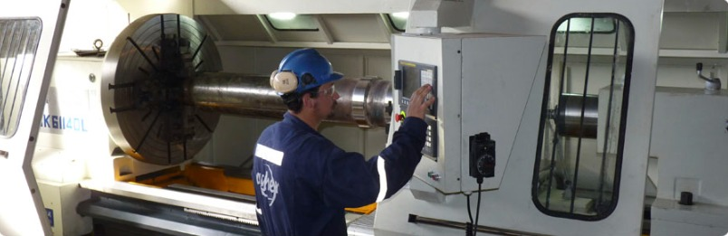
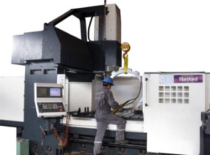
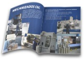

Mecanizados CNC y fundición centrifugada
Servicios Mecanizados Agher SpA es una empresa especialista en fundición centrifugada y mecanizados de precisión, que desarrolla soluciones innovadoras en tecnología de materiales para sus clientes.

Mecanizado CNC
Agher se caracteriza por el mecanizado de precisión en piezas complejas.
Ver másEquipos
Contamos con un moderno parque de maquinaria, en donde destacan diferentes equipos.
Ver másFundición
Agher acaba de inaugurar una nueva planta de fundición centrifugada en el Parque Industrial Coronel.
Ver másBujes centrifugados
Los bujes obtenidos por este proceso son compactos y muy resistentes al desgaste.
Ver más
Mecanizados CNC
Agher se caracteriza por el mecanizado de precisión en piezas complejas, para satisfacer las necesidades más exigentes del sector minero, forestal y siderúrgico. Para ello cuenta con maquinaria CNC de última generación y un equipo humano altamente especializado en la programación y operación de maquinaria CNC.
Conocer mecanizados CNC
Mira nuestro folleto
Revise el folleto corporativo de Agher con el detalle de nuestros servicios.
Abrir folleto